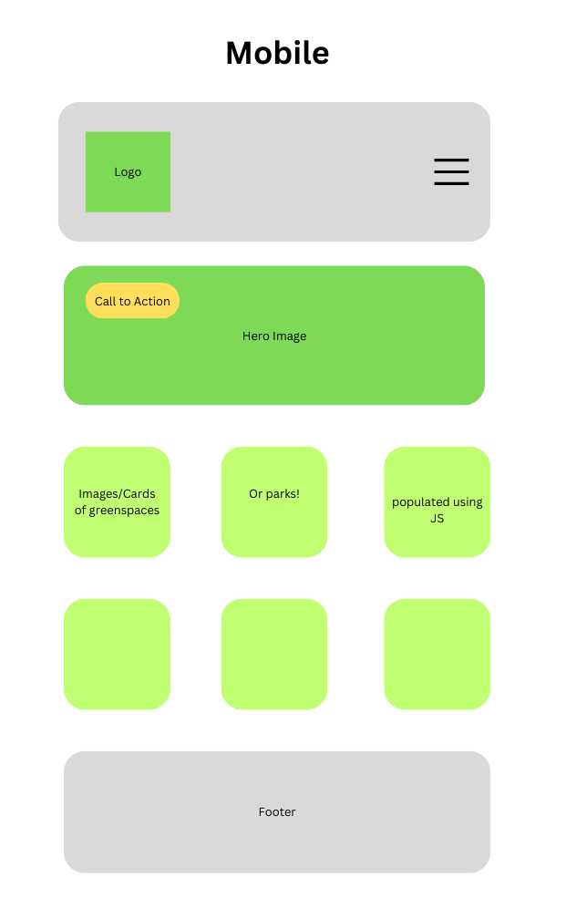
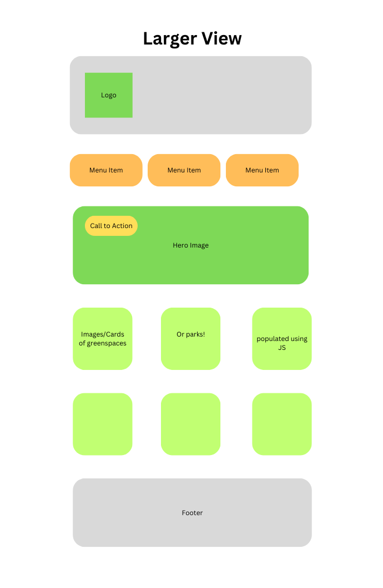

Site Name: Nurture in Nature
I created this name for the sake of this project.
I chose this name because it embodies the purpose of this website: to help parents and individuals without children alike, to nurture themselves and their families through experiences with nature.
This name plays off of the sociological theory of 'Nature vs. Nurture' and implies that both can find their balance in time spent in nature.
Site Purpose
This website provides a central directory for families of young children, and individuals, to find local parks and greenspace in the Ottawa, Ontario area.
Specifically it provides a filterable list of greenspace and parks, a form to join the growing organization's embassadors in order to collect and grow the database's information about local parks/greenspace, and a home landing page to welcome people to the organization's website.
Scenarios
1. A young family moves into the city and is looking for fun outdoor activities to do with their children. They come to this site to save them the time and mental load of trying to sift through the various amenities that differing greenspaces and other outdoor areas would provide for their family.
2. A family of young children decides they want to start spending more time outdoors. After living in the city for many years, they feel discouraged about how little space there appears to be for them to take their young children, especially secure, child-centered areas. They come to this website to find areas that are specifically designed to host children's play outdoors.
3. A family with older children is looking for places to hike. They do not necessary care for parks that have playgrounds, but they would like to find areas that have trails good for walking.
4. A grandparent wants to take their child for a playdate at a local park. They are able to search on this website for a playground that has accessible walkways in order to accomodate their wheelchair use.
Colour Schema
The colour schema for this website is visible on this webpage.
Typography
The font chosen for this website is visible on this webpage.
Font 1 (main): Nunito Sans, sans-serif
You can see this font is used as the main font of the page. Example: in paragraph elements.
I chose to use only one font to keep the design sleek and simple, allowing for the content and display of content to be the main focus of the website.
Wireframe
 